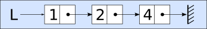
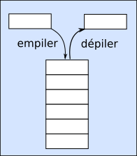

Structure de données#
Type de données#
Les données ont un type défini par le langage de programmation. On a les types simples comme:
les nombres entiers de type int ou integer (entier);
les nombres flottants représentant les nombres réels de type float;
les chaines de caractères, notées entre les simples ou doubles quote (guillemets) de type string;
les booléens qui prennent les valeurs True ou False de type bool.
Certains types de données sont plus complexes et rassemblent plusieurs données dans une même structure.
On connaît déjà en Python:
les tableaux ou listes de type list;
les dictionnaires qui sont de type dict.
Des opérations sur les types de données sont définies.
Pour les types int et float, on a les 4 opérations mathématiques.
Pour les chaines de caractères, on a la concaténation, les opérations d’encodage, la mise en forme, etc.
Pour les booléens, on a les opérations logiques and, or et not.
Pour les types structurés comme les listes et les dictionnaires, on dispose de méthodes (fonctions) qui permettent d’agir sur les données qu’elles contiennent.
En python, les listes et les dictionnaires disposent de méthodes de suppression, d’ajout, d’accès à une valeur, etc.
L’ensemble de ces méthodes constitue l’interface de la structure de données.
Type abstrait de données#
Un type abstrait de données (TAD) est un ensemble de données pour lequel on définit un certain nombre d’opérations et de méthodes permettant de manipuler les valeurs qu’il contient.
Les opérations et les méthodes définies pour ce type abstrait de données constituent l”interface.
La mise en place pour un langage de programmation d’un type abstrait de données repose sur les structures de données que ce langage possède comme les listes, les tableaux ou la programmation objet. Cela constitue l”implémentation du type abstrait de données.
Cette implémentation respectant l’interface du type abstrait de données définit une nouvelle structure de données.
Nous allons étudier plusieurs types abstraits de données et donc structures de données:
linéaires : la pile, la file et les listes chainées.
hiérarchiques : les arbres binaires et arbres binaires de recherche
relationnels : les graphes
Structure de données linéaires#
Liste chainée#
La liste chainée ne doit pas être confondue avec la liste python (associée à un tableau dynamique). La liste chainée est une structure de données qui lie ses éléments comme les maillons d’une chaine. Chaque maillon a une valeur et en même temps se trouve relié au maillon suivant.
Le maillon de la liste chainée est aussi appelé cellule.
On donne une représentation schématique d’une liste chainée contenant les valeurs 1, 2 et 4.

En python, les listes chainées n’existent pas nativement. Pour utiliser une telle structure de donnée, on doit écrire un script python qui réalise son interface.
Interface de la liste chainée#
L’interface d’une liste chainée se compose des 5 méthodes suivantes appelées primitives.
Créer une liste vide ;
Ajouter un élément en tête de liste;
Renvoyer la valeur de l’élément en tête de liste;
Renvoyer la liste privée de son premier élément;
Tester si la liste est vide;
D’autres méthodes ou fonctions peuvent compléter l’interface, comme:
Renvoyer une liste dont l’ordre des éléments a été inversé ;
Renvoyer la longueur de la liste, c’est-à-dire le nombre des éléments de la liste ;
Accéder à un élément particulier d’une liste ;
Rechercher un élément dans une liste en renvoyant au choix :
“Vrai” si l’élément sa position, « Faux » sinon ;
la position de la première occurrence de l’élément recherché ;
la liste des positions de toutes ses occurrences ;
Renvoyer une nouvelle liste dont un élément a été supprimé ;
Renvoyer une nouvelle liste correspondant à la liste d’origine à laquelle un élément a été ajouté à la fin ;
Toute primitive pouvant correspondre à un besoin spécifique.
Implémentation d’une liste chainée#
L’implémentation d’une liste chainée en Python nécessite l’écriture d’un script qui réalise l’interface. Nous utiliserons un tel script pour manipuler les listes chainées. Cette implémentation peut utilisée:
les listes python et les méthodes des listes;
la programmation orientée objet avec une classe Cellule et une classe Liste;
la programmation orientée objet et la récursvité pour certaines primitives.
Nous aurons à disposition un module liste_chaine qui définit deux classes Cellule et Liste. La classe Liste contient les 5 primitives de base:
Un constructeur sans argument __init__ qui permet de créer une liste vide; une fonction creer_liste_chaine() réalise aussi cette opération;
La méthode insere_en_tete(element) qui ajoute un élément en tête de liste;
La méthode tete() sans argument qui renvoie la tête de liste sans le supprimer;
La méthode queue() sans argument qui renvoie la liste privée de son premier élément;
La méthode est_vide() sans argument qui teste si la liste est vide.
La liste créée par cette implémentation est non mutable. Une fois créée, on ne peut pas supprimer les éléments, seulement ajouter un élément en tête de liste.
Une méthode d’affichage est également proposée pour visualiser la liste avec la commande print.
Exercice#
On reprend la liste chainée donnée en exemple:
Cette liste est constituée de trois cellules repésentées par des rectangles. Chaque cellule se compose de 2 parties:
la tête qui contient une valeur;
la queue qui contient la liste sans le premier élement.
Vers quelle liste pointe la dernière cellule ?
On souhaite représenter cette liste en écrivant chaque cellule sous la forme d’un couple (tête, queue). Donner une repésentation de cette liste.
Quelles sont les instructions qui permettent de créer cette liste chainée ?
On veut ajouter le nombre 5 au début de cette liste chainée. Comment faire ?
Comment mémoriser dans une variable Q la liste chainée [1]->[2]->[4]->[] sans la recréer ?
Comment mémoriser dans une variable R la liste chainée [2]->[4]->[] sans la recréer ?
La pile#
Une pile est une structure de données linéaire telle que:
on accède uniquement au dernier élément ajouté nommé sommet de la pile;
tout nouvel élément est ajouté au sommet de la pile.
Cette structure de donnée est dite LIFO pour Last In First Out (premier arrivé, dernier sorti).
On représente souvent une pile de façon verticale comme une pile d’assiettes.

Pour accéder à un élément situé dans la pile, il est nécessaire de dépiler jusqu’à ce que l’élément voulu soit au sommet de la pile. Tous les éléments dépilés sont perdus sauf si on les a sauvegardés dans une structure de donnée adaptée.
Remarques:#
La pile est utile dans différents types de problèmes:
algorithme d’un navigateur pour mémoriser les pages web visitées afin de revenir en arrière:
mémoriser les dernières actions pour les annuler ou les répéter (ctrl z, ctrl y);
algorithme pour parcourir certaines structures de données;
écrire des versions itératives d’algorithmes récursifs.
Interface d’une pile#
L’interface d’une pile se compose principalement des primitives suivantes :
Créer une pile vide, sans contenu;
Empiler une pile c’est à dire ajouter un nouvel élément au sommet de la pile;
Dépiler une pile c’est à dire renvoyer le sommet de la pile en le supprimant de la pile;
Tester si une pile est vide;
Accéder au sommet de la pile (sans dépiler), c’est à dire renvoyer la valeur du sommet de la pile sans le supprimer;
Connaitre le nombre d’éléments d’une pile appelée hauteur de la pile;
Implémentation d’une pile#
L’implémentation d’une pile peut se réaliser de différentes manières en Python. La pile n’existe pas nativement dans ce langage. Par contre, quelle que soit l’implémentation choisie pour une pile, l’interface reste la seule définition de cette structure.
Les listes de python disposent de fonctions et de méthodes pour réaliser facilement l’interface d’une pile.
On peut implémenter, en Python et en programmation orienté objet, un script regroupant les différentes méthodes et fonctions qui réalisent l’interface d’une pile. Cette implémentation est proche de l’implementation de la liste chainée.
Quelle que soit l’implémentation, celle-ci doit respecter l’interface définissant la pile.
Nous aurons à disposition un module pile qui définit deux classes Cellule et Pile. La classe Pile contient les 6 primitives de base:
Un constructeur __init__ sans argument qui permet de créer une pile vide; une fonction créer_pile permet aussi de créer une pile;
La méthode empiler(element) qui ajoute un élément au sommet de la pile;
La méthode depiler() sans argument qui renvoie le sommet de la pile en le retirant de la pile;
La méthode sommet() sans argument qui renvoie le sommet de la pile sans le supprimer;
La fonction len() sans argument qui renvoie la hauteur de la pile;
La méthode est_vide() sans argument qui teste si la pile est vide.
Exercice#
On considère une pile P telle que :
elle contient dans cet ordre les nombres entiers 17, 9, 12 et 8;
le nombre 17 est le sommet de la pile.
Représenter cette pile P par un schéma.
Écrire, à l’aide des primitives de l’interface, la suite d’instructions qui permet de créer la pile P.
On dépile deux fois la pile P. Écrire les instructions et donner son contenu.
On empile la valeur 31. Écrire l’instruction donner le contenu de la pile P ?
Écrire un algorithme qui dépile la pile P tant qu’elle n’est pas vide.
La file#
Une file est une structure de données linéaire telle que:
on accède uniquement au premier élément ajouté nommé tête de file;
tout nouvel élément est ajouté en dernière position, soit en fin de file.
Une file est une structure dite FIFO signifiant First In, First Out se traduisant par premier arrivé, premier sorti.
On représente souvent une file de façon horizontale comme une file d’attente.

Remarques:#
La file est utile dans différents types de problèmes:
pour une imprimante qui gère la file d’impression en attente;
gestion de la mémoire tampon pour lire et écrire dans un fichier;
modélisation du jeu de la bataille (on découvre la carte du dessus et on place les cartes ramasées en dessous);
algorithme pour parcourir certaines structures de données;
Interface de la file#
L’interface d’une file se compose principalement des 6 primitives suivantes:
Créer une file vide, c’est à dire sans contenu;
Enfiler un nouvel élément, c’est à dire ajouter ce nouvel élément dans la file;
Défiler une file, c’est à dire retirer un élément de la file en récupérant sa valeur.
Accéder à la tête de la file (sans défiler), c’est à dire sans supprimer l’élément;
Tester si une file est vide;
Connaitre le nombre d’éléments d’une file appelée longueur de la file;
Implémentation d’une file#
L’implémentation d’une file peut se réaliser de différentes manières en Python. La file n’existe pas nativement dans ce langage. Par contre, quelle que soit l’implémentation choisie pour une file, l’interface reste la seule définition de cette structure.
Les listes de python disposent de fonctions et de méthodes pour réaliser facilement l’interface d’une file.
On peut implémenter, en Python et en programmation orienté objet, un script regroupant les différentes méthodes et fonctions qui réalisent l’interface d’une file.
Quelle que soit l’implémentation, celle-ci doit respecter l’interface définissant la file.
Nous aurons à disposition un module file qui définit deux classes Cellule et File. La classe File contient les 6 primitives de base:
Un constructeur __init__ sans argument qui permet de créer une file vide;
La méthode enfiler(element) qui ajoute un élément en fin de file;
La méthode defiler() sans argument qui renvoie la tête de la file en le retirant;
La méthode tete() sans argument qui renvoie la tete de la file sans le supprimer;
La fonction len() sans argument qui renvoie la longueur de la file;
La méthode est_vide() sans argument qui teste si la file est vide.
Exercice#
On considère une file F contenant dans l’ordre les nombres 1, 11, 111 et 1111; le nombre 1 est la tête de la file.
Représenter par un schéma la file F.
On enfile la valeur 11111. Quel est le contenu de la file F ?
On défile deux fois la file F. Quel est son contenu ?
Écrire la suite d’instructions qui permet de créer la file F et réaliser les actions des questions 2 et 3.
Écrire un algorithme qui défile la file F tant qu’elle n’est pas vide.
Solution aux exercices#
[1]:
#import liste_chaine
from liste_chaine import Liste, creer_liste_chaine
# création de la liste chainée
#L=liste_chaine.creer_liste_chaine()
L=creer_liste_chaine()
L.insere_en_tete(4)
print(L)
L.insere_en_tete(2)
print(L)
L.insere_en_tete(1)
print(L)
# Ajout de la valeur 5 en tête de liste
L.insere_en_tete(5)
print("L:",L)
# Variable Q contenant la queue de la liste
Q=L.queue()
print("Q:",Q)
# Variable R contenant la queue de la queue de la liste
R=L.queue().queue()
print("R:",R)
print("la tete:",L.tete(),"et la queue:",L.queue())
print("la tete de Q:",Q.tete(),"et la queue de Q:",Q.queue())
[4]->[]
[2]->[4]->[]
[1]->[2]->[4]->[]
L: [5]->[1]->[2]->[4]->[]
Q: [1]->[2]->[4]->[]
R: [2]->[4]->[]
la tete: 5 et la queue: [1]->[2]->[4]->[]
la tete de Q: 1 et la queue de Q: [2]->[4]->[]
[2]:
#import pile
from pile import Pile, creer_pile
#P=pile.creer_pile()
P=creer_pile()
P.empiler(8)
P.empiler(12)
P.empiler(9)
P.empiler(17)
print(P)
P.depiler()
P.depiler()
print(P)
P.empiler(31)
print(P)
while not P.est_vide():
P.depiler()
print(P)
... ] 17 ] 9 ] 12 ] 8 ]
... ] 12 ] 8 ]
... ] 31 ] 12 ] 8 ]
... ]
[3]:
from file import File, creer_file
F=creer_file()
F.enfiler(1)
F.enfiler(11)
F.enfiler(111)
F.enfiler(1111)
F.enfiler(11111)
print(F)
F.defiler()
F.defiler()
print(F)
while not F.est_vide():
F.defiler()
print(F)
1 < 11 < 111 < 1111 < 11111 < ...
111 < 1111 < 11111 < ...
...
[ ]: